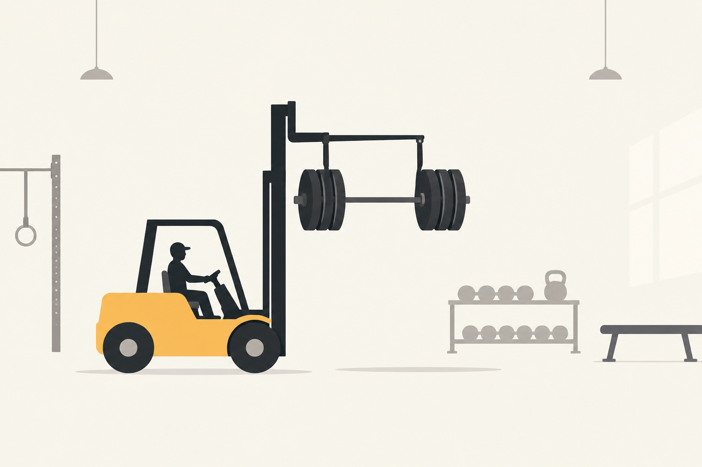
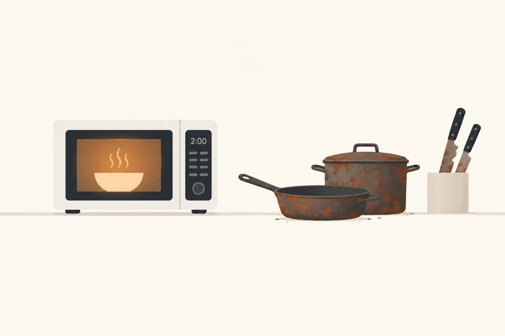
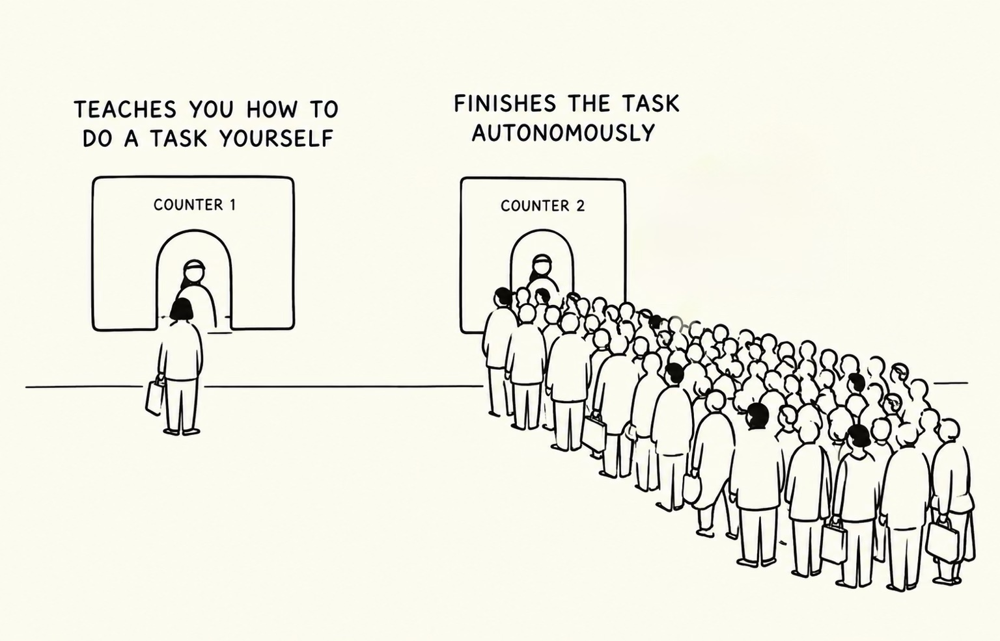
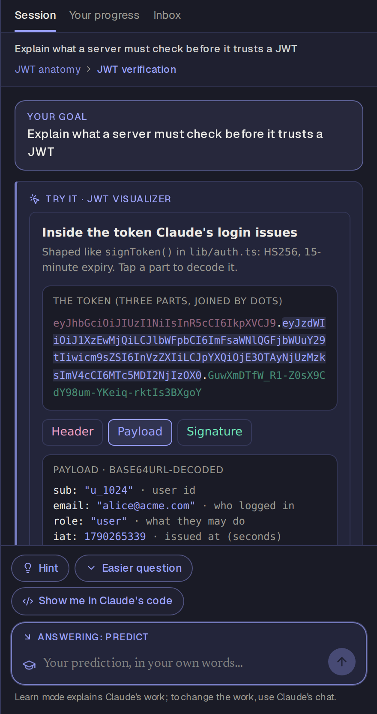

Claude does the work. You learn from it while it happens.


“When AI agents handle complex tasks autonomously, humans can become passive observers rather than active learners, missing opportunities to develop their own skills and understanding.”The brief, challenge 2: Cognitive engagement
That's the problem I took on. Agents are a forklift in the gym and a microwave in the kitchen: the work gets done, but the muscle doesn't grow, the knives go dull and the pots rust. Showing more of the work doesn't fix it. Claude already shows its reasoning and code, and people skip to the answer.
The good news: unlike a course, this isn't learning for its own sake. The task is real, the person just asked for it, and an expert is doing it right now. It's on-the-job training, where you learn the job while a skilled hand does it.
The goal: add back the right amount of effort for the learner while the work gets done, without slowing the work down.
Option A is customer education: teaching people Claude's features. Option B is general education: helping people get better at their own work, whether that's programming, writing or analysis. B is the bigger opportunity. Finding features matters, but people losing their own skills is the bigger risk, and it grows as agents take on more of the work.
It was also a personal choice. I trained as an aerospace engineer, then built an award-winning edtech company and have stayed in education since. I care about building learning that is pedagogically sound and realistic for the next generation of learners, and I was already working on ideas in this space. Option B was an easy pick.

When something needs doing, people go where it gets done fastest. That's why so many good learning products get little use; I've built some of them. A separate learning app that makes you work for the answer is counter 1: good for the few who choose it, empty for everyone else.
So I didn't build counter 1. Learn mode puts the teaching at counter 2, inside the Claude session where people already are, and it never makes the task wait.
Learn mode is a switch in Claude. When it's on, a learning agent runs alongside Claude. Claude does the task exactly as it would anyway; the learning agent watches Claude's work and teaches you from it.
verifyToken() check?” When the file appears, Learn mode checks your answer against the real code and links to the line.
lib/auth.ts and isn't waiting on anything. Right: Learn mode has read Claude's reasoning and plan, built a visualizer of the token that file will issue, and asks you to predict what verifyToken() must check before Claude writes it.It's a real agent, kept on a short leash. It chooses its own actions with tools, remembers the learner across sessions, and works toward the goal the learner picked. It doesn't run unattended: it acts when something happens, one decision at a time.
| Tool | What it's for |
|---|---|
| Suggest goals | 4–5 things worth learning from this task, from where to look in the repo to a stretch goal. |
| Ask a question | Predict the next step, explain it back, “what if…”, or pick the files you'd open. It writes the answer key from Claude's code. |
| Build an interactive | Its preferred way to teach. A separate Opus call builds it from Claude's code and runs it in a sandbox with no network access. |
| Hint · Explain · Wrap up | A nudge that never gives the answer; a short explanation tied to Claude's code; a recap when the goal is done. |
Everything it produces has to point at the step in Claude's work it's about; references to steps that don't exist are dropped. Two helpers sit beside it: a grader (Sonnet) that scores written answers against the answer key and names the misconception, and a quick check (Haiku) that decides whether a task is worth learning from at all.
It responds to events: a task starts, you pick a goal, you answer, you pick a next step or type a question, or Claude writes a step you made a prediction about. It keeps going on its own where that helps. After you pick the files you'd open, it moves to the next question while Claude is still reading, then checks your picks against the files Claude actually opened. Once you've answered three questions on a goal, it wraps up with a recap.
Claude never waits for Learn mode and isn't influenced by it. Learn mode gets ahead by reading Claude's reasoning as it streams and the plan Claude makes before it writes code. That's how it can ask you to predict verifyToken() before the file exists. In a real integration it could start even earlier, as soon as the main agent's own reasoning is available.
One decision per event, a few questions per goal, and rate limits per person and per day keep cost and attention in check. The main agent is protected too: learner data never enters Claude's context, and a test fails if the main agent's code ever imports the learning code.
| Principle | Where it shows up |
|---|---|
| Learn on the job | An expert does the real task while the learning agent explains, asks and checks. |
| Learn when it matters | Topics come from the task you just asked for, so there's no need to convince you they matter. |
| Guess, then check | You predict before the code exists, then compare with what Claude wrote. |
| Do, don't just watch | Interactives you play with instead of text you read. A live map of Claude's work was dropped: it feels like teaching without showing anyone learned. |
| Support, then step back | Hints, never answers; an easier question or an interactive after a miss. |
| Space it out and mix it up | Refreshers at growing gaps, and when a related task comes up. |
| Know the learner | Scores, evidence and misconceptions decide what comes next and skip what you already know. |
Simulated in the prototype: the repository Claude works on, the pacing of Claude's steps, and a “+3 days” clock for trying spaced review. If API credits run out, the app falls back to a scripted version of the demo.